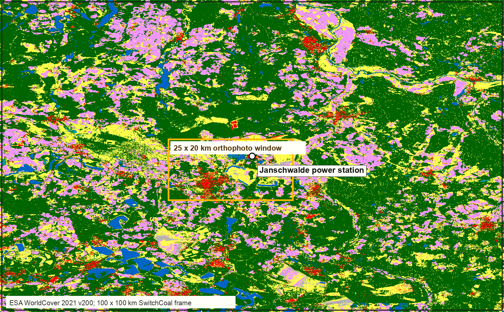
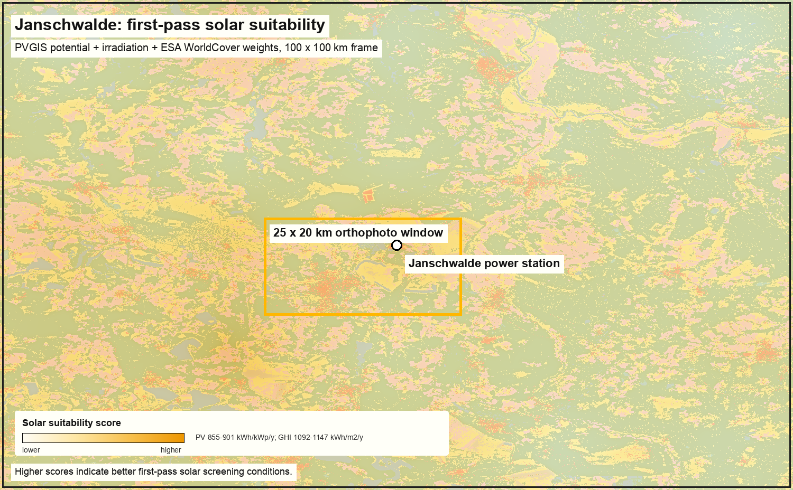
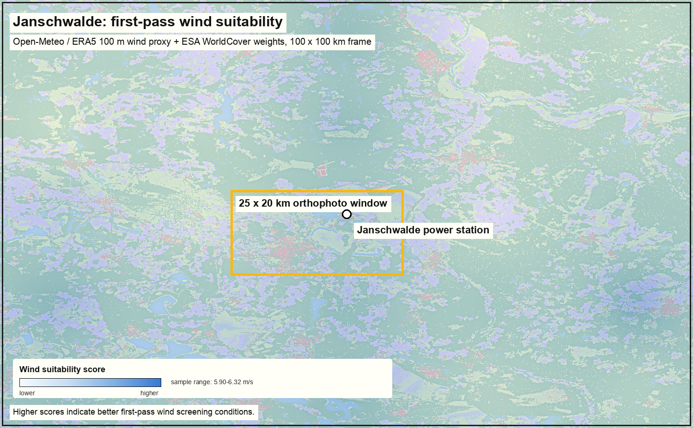
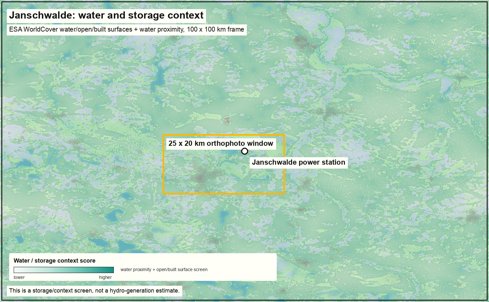
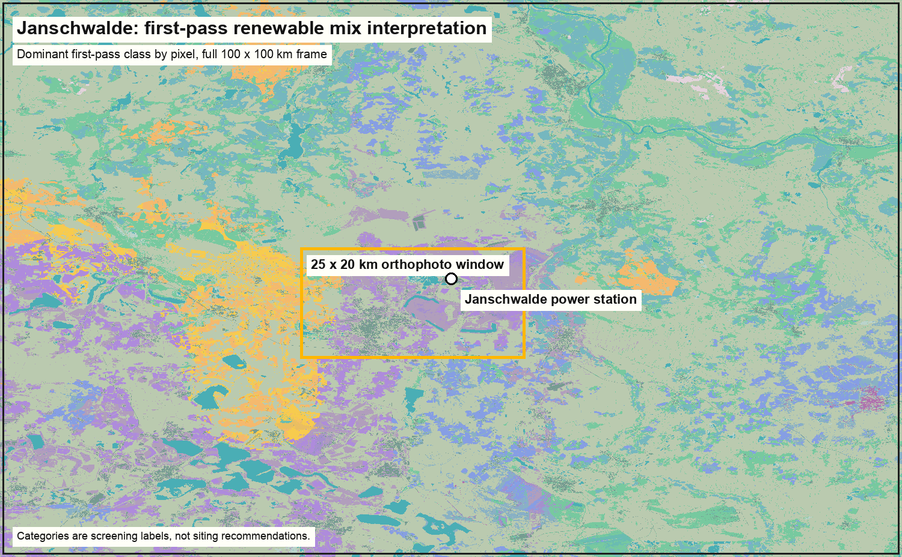

SwitchCoal + Earth Observation: Janschwalde
A repeatable 100 x 100 km renewable resource stack
Janschwalde: Can The Coal Site Become A Renewable Search Zone?
SwitchCoal’s core assumption is simple: a coal plant is not only a power station. It is also a grid connection, an industrial landscape, and a regional energy anchor. The question is whether nearby wind, solar, batteries, and other flexibility assets could replace coal generation within roughly a 100 x 100 km search area.
This page does not claim that the whole area should be covered with renewables. It shows a first Earth-observation evidence stack for asking where a plausible renewable mix might begin to make sense.
- Capacity
- 5,210 MW
- Status
- operating
- Annual CO2 estimate
- 8.04 Mt
- Frame
- 100 x 100 km
What Is Shown
The page combines five layers for a first-pass screening view:
- ESA WorldCover land cover for the actual surface pattern.
- Photovoltaic Geographical Information System (PVGIS) solar resource as a solar potential proxy.
- Open-Meteo / European Centre for Medium-Range Weather Forecasts Reanalysis v5 (ERA5) 100 m wind speed as a coarse wind proxy.
- Water and storage context from land cover and proximity to water/open/built surfaces.
- A tentative renewable mix interpretation that keeps the language cautious.
It also links the smaller TEE/Tessera viewport for detailed 5 x 5 km surface exploration around the plant footprint.
Coal Asset And Search Frame
Plant: Janschwalde power station
Coordinates: 51.835666, 14.457808
Coal tracker status: operating
Annual CO2 estimate: 8.04 Mt
SwitchCoal frame: 100 x 100 km search box centered on the plant
How to read the map sequence
The orthophoto directly below is a 25 x 20 km detail window for orientation: Janschwalde power station, Cottbus, lakes, mining surfaces, forests, and fields. The 100 x 100 km SwitchCoal frame appears in the land-cover and suitability maps that follow.
The 100 x 100 km frame is a search area, not a construction footprint. It should narrow attention, not decide a project.
What the 100 x 100 km Coverage Is Made Of

ESA WorldCover classes shown
Black-ring marker = Janschwalde power station. Orange box = approx. 25 x 20 km orthophoto context window shown above.
Open the TEE 5 x 5 km viewport
The region is a mixed landscape: large forest areas, grassland and cropland mosaics, water bodies, mining and industrial surfaces, towns, and transport corridors. That makes the SwitchCoal assumption more interesting but also more conditional. The opportunity is not “fill the box”; it is to identify suitable pieces within the box.
Solar Suitability

Solar suitability score lowerhigher
Solar looks like the cleanest first component of the replacement mix, but not as a blanket solution. The map points most naturally toward open, built, bare, disturbed, or selected agricultural surfaces. Forest-heavy areas and sensitive wetlands should be treated as constraints unless a more detailed planning layer proves otherwise.
Wind Suitability

Wind suitability score lowerhigher
The wind signal is present but modest in this coarse screen. At 100 m height the sampled 2023 mean wind range is roughly 5.90 to 6.32 m/s. That suggests wind could matter, especially in more open areas, but it needs a much stricter second pass: settlement buffers, turbine setbacks, forest constraints, protected areas, aviation, grid connection, and local acceptance.
Water, Grid, And Storage Context

Water / storage context score lowerhigher
Water in this stack is not treated as a simple hydro resource. Around a lignite landscape it is more useful as context: cooling legacy, post-mining lakes, water-management constraints, possible pumped or battery-storage siting clues, and landscape transition evidence. Grid context is still only preliminary here; official transmission and substation capacity must be added before making a strong infrastructure claim.
Tentative Renewable Mix

Combined first-pass renewable mix classes
Classes are first-pass screening labels derived from the combined resource stack, not siting recommendations.
This first pass points toward a selective hybrid story rather than a single technology answer. A large part of the frame remains low or constrained in this screen, mostly because forest and other land-cover constraints are treated conservatively. Solar, wind, mixed solar-wind, and storage-context areas appear as pockets to investigate, not as a ready-made replacement plan.
The current combined screen divides the 100 km frame as follows:
| Category | Area | Share |
|---|---|---|
| Low or constrained | 6,190.03 km2 | 61.90% |
| Solar leaning | 1,099.47 km2 | 10.99% |
| Wind leaning | 1,060.93 km2 | 10.61% |
| Storage / water / grid context | 694.23 km2 | 6.94% |
| Mixed solar and wind | 955.23 km2 | 9.55% |
Method And Tools
ESA WorldCover
Used as the primary land-cover label layer. This keeps the labels product-based rather than visually guessed from a satellite background.
Photovoltaic Geographical Information System (PVGIS)
Used for sampled annual PV potential and irradiation. This is a screening proxy, not a project design or yield forecast.
Open-Meteo / European Centre for Medium-Range Weather Forecasts Reanalysis v5 (ERA5)
Used for 2023 daily mean wind speed at 100 m. This is a coarse regional wind proxy, not a bankable wind assessment.
Clay / Sentinel-2
Used for smaller visual EO context around the plant. The 100 km labelled layer comes from ESA WorldCover, not manual image annotation.
TEE / Tessera
Linked for detailed 5 x 5 km embedding exploration of the plant footprint. TEE is better for small interpretable windows than for the full 100 km screen.
Quarto
This page is generated from a Quarto source document so the evidence page can be reviewed, edited, rebuilt, and republished with a clear source trail.
Caveats
This is a first-pass evidence stack. It does not yet include official protected-area masks, settlement buffers, land ownership, slope and aspect, grid-capacity data, grid queue status, turbine setback rules, permitting risk, operator strategy, financing, or project economics. In the current build, OpenStreetMap grid/water/protected context overlays were unavailable, so the maps should be read as land-cover and resource screens with grid/protection layers still pending.
The right interpretation is therefore tentative: this page says where the SwitchCoal assumption looks worth investigating, not where renewable assets should be built.
Disclaimer
This page is an exploratory evidence screen, not legal, engineering, permitting, financial, or investment advice. The maps use public and model-derived datasets at screening resolution; they may be incomplete, out of date, or unsuitable for site-level decisions. Any project claim would need verification against official planning data, grid-operator information, environmental constraints, land ownership, local regulation, and expert field assessment.